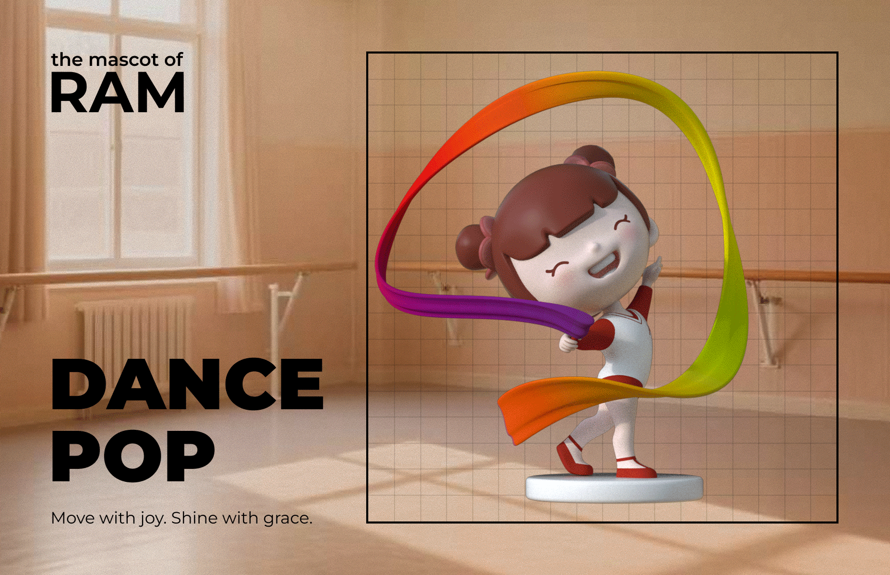

From Illustration to Mascot: Shaping School Spirit in 3D
This project involved designing the official mascots for the People's University Affiliated
Elementary School in Aerospace City. The final set includes two characters — a boy and a girl — each
modeled across nine scenarios representing core educational values.
The mascot series was developed to support school culture building and student engagement, embodying
both relatable daily life and aspirational space exploration motifs. The project also focused on
ensuring the figures were suitable for physical toy production while retaining a cohesive visual
identity across poses and themes.
Led 3D modeling to ensure consistency and charm across all nine poses
Translated 2D designs into expressive, production-ready 3D figures
Worked with vendors to adjust models for molding and production
Used in campus displays and student giveaways to build school identity